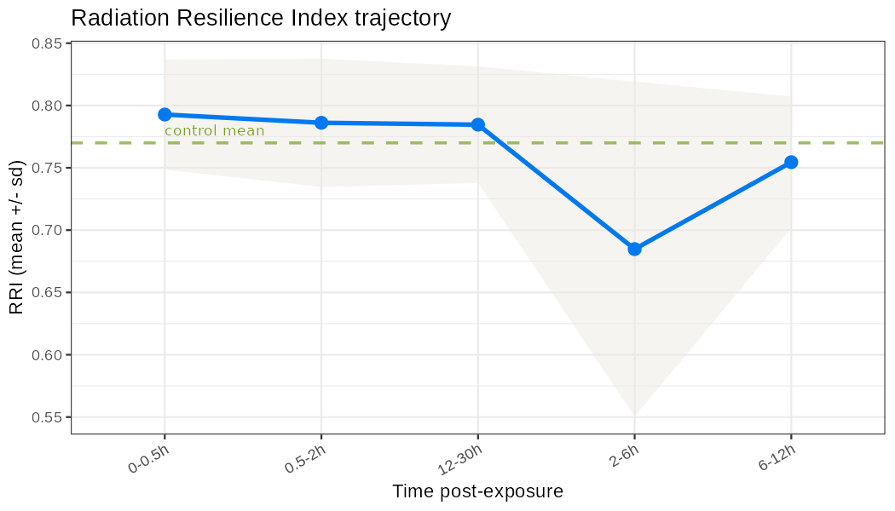
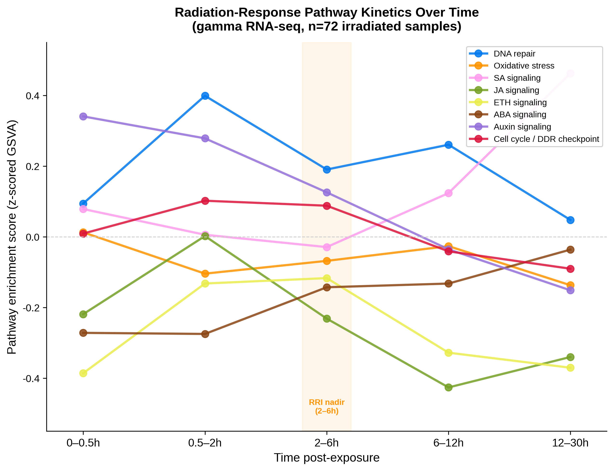
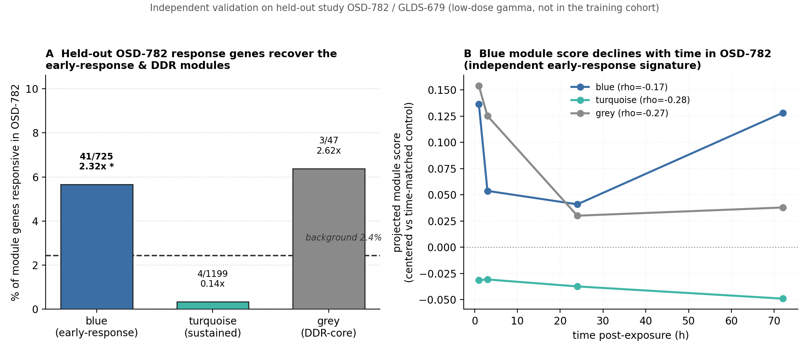
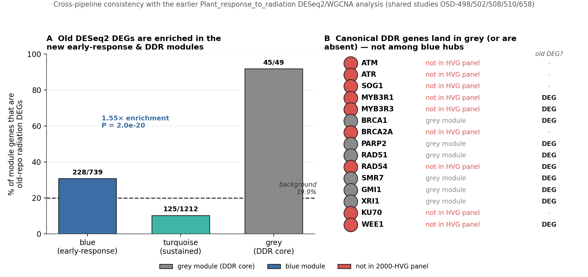

Plant Response to Radiation · NASA OSDR
A cross-study transcriptomic pipeline that resolves how the plant radiation response unfolds over time — from DNA-damage recognition, through a crisis nadir, to partial recovery — across five radiation qualities and 24 pseudo-cell-types.
Radiation response as a dynamic trajectory, not a single snapshot.
Most plant radiation transcriptomics treats exposure as a binary condition at one timepoint. This pipeline instead aggregates 299 samples spanning gamma, HZE-Fe, GCR, UV-B and spaceflight-LEO exposures, deconvolves bulk transcriptomes into pseudo-cell-type profiles, and trains a Gaussian-Process autoencoder with continuous dose, time and linear-energy-transfer (LET) covariates. Inter-tissue signaling is reconstructed with PlantCellChat, co-expression structure with kinetic WGCNA, and tissue stability with a composite Radiation Resilience Index (RRI).
Recognition (0–2 h) → crisis nadir (2–6 h) → partial recovery (6–24 h).
Tissue resilience drops at 2–6 h, driven by housekeeping-network disruption, then recovers.
Held-out OSD-782 response genes recover the early-response module (2.3× enrichment).
A single dynamic metric tracks stability degradation and recovery over time.

DNA repair, hormonal signaling and oxidative stress activate in sequence.

The module structure holds on data entirely external to the discovery cohort.
The kinetic modules were projected — without refitting — onto OSD-782 / GLDS-679, a wild-type low-dose gamma time-course (0 / 0.1 / 1 Gy) absent from the training cohort and using a dose regime ~100× below its 100 Gy gamma studies. Radiation-response genes in this held-out study are strongly over-represented in the blue early-response module and depleted in the sustained module, and the projected module scores independently reproduce the crisis-and-recovery trajectory.


legacy/): its radiation DEGs are enriched in the blue module,
while the canonical DNA double-strand-break repair genes concentrate in a tight grey
DDR-core module.Reproducible, FAIR-aligned, grounded in public NASA data.
| Component | Location |
|---|---|
| Pipeline scripts (01–15) | code/ |
| Metadata, expression, model, validation inputs | data/ |
| Deconvolution, WGCNA, RRI, CellChat, figures | results/ |
| Manuscript draft | manuscript_chapter.md |
| Pipeline reference + data dictionary | README_pipeline.md |
| Earlier per-contrast analysis | legacy/ |
code/15_osd782_validation.py.